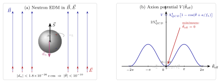

强 CP 问题 — 为什么 $\bar\theta\approx 0$?
上一节讲过暗物质: 有一种非重子、冷、稳定的粒子填满宇宙, 但没有一个标准模型粒子合适. 这一节讲另一个不对劲的"零"——不同的是, 这次问题不在实验太多, 而在理论太少. QCD 的拉氏量本该写着 $\mathcal L = -\tfrac{1}{4}G^a_{\mu\nu}G^{\mu\nu a} + \bar q(i\slashed D - m)q$ 再加一项 $\bar\theta\,(g_s^2/32\pi^2)\,G\tilde G$, 其中 $\bar\theta$ 是一个无量纲实参数, $\tilde G^{\mu\nu a} = \tfrac{1}{2}\epsilon^{\mu\nu\rho\sigma}G_{\rho\sigma}^a$ 是 dual 场强. CPT 定理保证 Lorentz 不变局域场论必 CPT 不变, 但 $G\tilde G$ 这一项单独破坏 P 和 T (因此在 CPT 假设下破 CP). 没有对称性禁止它, 量纲允许它, 那 $\bar\theta$ 应该是个 O(1) 的数——至少没有先验理由说它是 $10^{-10}$.
可中子的电偶极矩被测到极严: ILL 研究所的超冷中子实验给出 $|d_n| \lt 1.8\times 10^{-26}\,e\,\mathrm{cm}$ (2020 年数据); 这反推回 $|\bar\theta| \lt 10^{-10}$. 这不是一个"小而合理"的数——这是一个"小到需要解释"的数. 物理里一个参数被实验压到比它的自然标度小十个数量级, 而没有任何机制说它该小, 这就叫 不自然, 也就是 1978 年 't Hooft 本人提出的 naturalness 语义. 强 CP 问题就是这样一个不自然问题: $\bar\theta$ 本该是 O(1), 但它在实验里是 $10^{-10}$. 为什么?
一、$G\tilde G$ 项是什么, 为什么它能有物理意义?
先把这项本身看清. 场强 $G_{\mu\nu}^a = \partial_\mu A_\nu^a - \partial_\nu A_\mu^a + g_s f^{abc} A_\mu^b A_\nu^c$, 对偶场强 $\tilde G^{\mu\nu a} = \tfrac{1}{2}\epsilon^{\mu\nu\rho\sigma}G^a_{\rho\sigma}$. 由于 $\epsilon$ 张量的反对称性, $G\tilde G \equiv G_{\mu\nu}^a\tilde G^{\mu\nu a}$ 可以写成一个 Chern-Simons 流的散度:
$$ G^a_{\mu\nu}\tilde G^{\mu\nu a} = \partial_\mu K^\mu, \qquad K^\mu = \epsilon^{\mu\nu\rho\sigma}\!\left(A_\nu^a \partial_\rho A_\sigma^a + \tfrac{1}{3}g_s f^{abc}A_\nu^a A_\rho^b A_\sigma^c\right). $$
经典地看, $\bar\theta\int\mathrm d^4x\,G\tilde G = \bar\theta\int\mathrm d^4x\,\partial_\mu K^\mu$ 是一个边界项, 对欧几里得作用量扔到无穷远应该为零. 这就是课本里常说的"$G\tilde G$ 是 topological term, 不影响运动方程"的版本. 如果到这里停下, 我们会得出一个错结论: $\bar\theta$ 在物理上没有意义, 为什么要问它为什么小?
这里是 cliché 踩雷的地方——大多数教科书一笔带过"它是全导数, 但有 instanton 效应", 然后就去讲 PQ 了. 本节要严格把这一步挑开: 为什么全导数项能有物理效应? 答案有三层.
第一层: 边界条件非零. Euclidean 作用量在无穷远处, 要求场强 $G$ 可以衰减, 但不要求规范势 $A_\mu$ 衰减——$A_\mu$ 只需趋近一个纯规范 (pure gauge) $A_\mu \to -(i/g_s)(\partial_\mu U)U^{-1}$. 这些不同的 $U: S^3 \to SU(3)$ 分成拓扑等价类, 由整数 winding number $n$ 标记, 因为 $\pi_3(SU(3)) = \mathbb Z$. 对每个 $n$, 上式里的 $\int\partial_\mu K^\mu$ 等于 $32\pi^2 n/g_s^2$ (乘以前面的 $g_s^2/32\pi^2$ 变成 $n$). 所以 $\bar\theta$ 项给路径积分加了一个权重因子 $e^{i\bar\theta n}$——不同拓扑扇的贡献被不同相位加权. 这个权重的物理后果 不 是全导数, 因为"全导数的积分等于边界值"这个数学定理要求场在边界趋零, 而规范理论的边界条件恰好违反这个前提.
第二层: instanton 是具体非平凡 $n$ 解. BPST 1975 给出了 $n = 1$ 的自对偶解 (instanton), 其作用量 $S_{\text{inst}} = 8\pi^2/g_s^2$. 这就把"拓扑扇" 从抽象存在变成具体贡献: path integral 上有一族以 $n = \pm 1, \pm 2, \ldots$ 标号的 saddle point, 每个贡献 $e^{-S_{\text{inst}}|n|}e^{i\bar\theta n}$. 总 vacuum 能量密度依赖 $\bar\theta$:
$$ \varepsilon_{\text{vac}}(\bar\theta) = -\Lambda_{QCD}^4(1 - \cos\bar\theta) + \mathcal O(\Lambda_{QCD}^4\sin^2\bar\theta), \tag{1} $$
在 $\bar\theta = 0$ 处最低 (Vafa-Witten 1984 定理的一个体现). 所以 $\bar\theta$ 的确是物理的——它进真空能, 它可被观测到, 哪怕它"长得像"全导数.
第三层: chiral 旋转能把 $\bar\theta$ 转到夸克质量矩阵里. 这是 't Hooft 1976 发现的关键. 任何夸克的手征相位变换 $q \to e^{i\alpha\gamma_5}q$ 在经典 Lagrangian 下不变 (对无质量夸克), 但在量子水平上由 axial anomaly 产生一个 $G\tilde G$ 项的偏移:
$$ \bar\theta \to \bar\theta - 2\sum_f \alpha_f. $$
这意味着 $\bar\theta$ 本身不是规范不变的物理量. 物理的是 $\bar\theta$ 与夸克质量矩阵的复相位之差. 如果夸克质量矩阵 $M = M_u \oplus M_d$ 有复相位 $\arg\det M$, 则物理量是
$$ \bar\theta_{\text{phys}} = \theta_{QCD} + \arg\det M. $$
这个物理 $\bar\theta$——下文就直接叫 $\bar\theta$——无法通过任何重定义吃掉. 实验约束的是这个量, 它正是要求被解释为什么小的那个 $10^{-10}$.
二、从 $\bar\theta$ 到中子 EDM: chiral perturbation theory
这是本节 deepdive 的重心——从一个 $\bar\theta$ 算出 $d_n$ 的量级, 这个通道让 "$\bar\theta$ 为什么小" 变成"中子电偶极矩为什么小"——一个可实验测量的陈述.
思路. $\bar\theta$ 效应在低能被锁进 chiral Lagrangian. 标准 chiral perturbation theory (ChPT) 把 pion 场 $\pi^a$ 当作 $SU(2)_L\times SU(2)_R/SU(2)_V$ 的 Goldstone 玻色子, 对应手征对称破缺. $\bar\theta$ 进入 ChPT 的方法是: 先用手征旋转把 QCD 的 $\bar\theta$ 从胶子项搬到夸克质量矩阵里, 再把修改过的质量矩阵写进 ChPT 的质量项里. 结果是 pion 场里出现一个 CP 破坏的顶点——本来没有的 $\pi^0 \bar N N$ vertex (中子-pion 的 CP 奇相互作用).
具体地, Crewther-Di Vecchia-Veneziano-Witten 1979 给出的估算 (用物理输入 $\bar u u$ 凝聚 + 轻夸克质量比) 是
$$ g_{\pi N N}^{\bar\theta} \simeq \bar\theta \,\frac{m_u m_d}{m_u + m_d}\,\frac{\langle\bar q q\rangle}{m_\pi^2 f_\pi}\,\frac{g_A}{2 f_\pi} \approx 0.027\,\bar\theta. $$
有了这个 CP 破坏顶点, 一圈 pion-nucleon diagram (中子放出 $\pi^0$, pion 传到光子顶点, 再回来) 就给中子一个永久电偶极矩. 用 chiral logarithm 把主导发散项保留:
$$ d_n = \frac{e\,g_{\pi N N}\,g_{\pi N N}^{\bar\theta}}{4\pi^2 m_N}\,\ln\frac{m_N}{m_\pi} \approx \bar\theta\times 2.4\times 10^{-16}\,e\,\mathrm{cm}. \tag{2} $$
代入 $g_{\pi NN} \approx 13.5$, $m_N \approx 939\,\mathrm{MeV}$, $m_\pi \approx 140\,\mathrm{MeV}$, $\ln(m_N/m_\pi) \approx 1.9$. 方程 (2) 的系数有 50% 量级不确定度 (取决于用哪种 ChPT 方案与晶格 QCD 输入), 但量级稳: $d_n \sim \bar\theta\times 10^{-16}\,e\,\mathrm{cm}$.
现在把这条公式和实验结合. 2020 年 ILL nEDM 合作组在 Paul Scherrer Institute 用超冷中子 Ramsey 技术测到
$$ |d_n| \lt 1.8\times 10^{-26}\,e\,\mathrm{cm} \quad (90\%\ \mathrm{CL}). $$
这个数字的物理含义值得停一下看. 中子半径约 0.87 fm, 若中子内部有一个"整体电荷分离" 的偶极矩对应 $e\times 0.87\,\mathrm{fm} = 4.4\times 10^{-14}\,e\,\mathrm{cm}$, 实验上界是这个"天然尺度"的 $10^{12}$ 分之一. 换句话说, 中子内部正负电荷分布在尺度上不偏离球对称超过 $10^{-12}$——这是实验物理最精密的对称性检验之一. 代入方程 (2) 反推 $\bar\theta$:
$$ |\bar\theta| \lt \frac{1.8\times 10^{-26}}{2.4\times 10^{-16}} \approx 0.8\times 10^{-10} \approx 10^{-10}. $$
这就是那个"为什么 $\bar\theta$ 这么小" 的 $10^{-10}$ 上界. 它不是理论偏好, 不是先验假设, 而是 nEDM 实验与 ChPT 估算直接给出的数字. 且 nEDM 还在继续压, n2EDM (PSI 升级) 与 SNS EDM (Oak Ridge) 目标把灵敏度再压两个数量级到 $10^{-28}\,e\,\mathrm{cm}$, 若仍然看不到信号, $\bar\theta$ 上界会降到 $10^{-12}$——问题会更不自然.
三、Peccei-Quinn 机制: 把 $\bar\theta$ 动态化
Roberto Peccei 与 Helen Quinn 1977 年的 PRL (CP Conservation in the Presence of Pseudoparticles) 提出了一个漂亮的思路: 如果 $\bar\theta$ 不是常数, 而是某个场, 那它就不是被任意选的——它被自己的势能 $V(\bar\theta)$ 决定. 而由方程 (1), QCD 的 instanton 贡献恰好给 $\bar\theta$ 一个势能, 形式是 $V(\bar\theta) = \Lambda_{QCD}^4(1-\cos\bar\theta)$, 在 $\bar\theta = 0$ 处最低. 若 $\bar\theta$ 是一个动态场, 它必定滚到零点, CP 自动守恒.
实现方法. PQ 假设一个新的全局 U(1)$_{\text{PQ}}$ 对称, 作用在某个新标量场 $\Phi$ (含两个 Higgs doublet 的 DFSZ 模型或多一个 SM singlet 的 KSVZ 模型, 两类都可以) 上. 这个对称在一个高能标 $f_a$ 处自发破缺: $\langle\Phi\rangle = f_a/\sqrt 2$. PQ 破缺产生一个 (无质量) Goldstone boson $a(x)$——就是 axion. 由于 U(1)$_{\text{PQ}}$ 有轴反常 (即它在量子水平上会被 $G\tilde G$ 破坏——跟前面讲的 chiral 旋转同一件事), 耦合进入:
$$ \mathcal L \supset \frac{a}{f_a}\,\frac{g_s^2}{32\pi^2}\,G^a_{\mu\nu}\tilde G^{\mu\nu a}. $$
对比原始 QCD 的 $\bar\theta\,(g_s^2/32\pi^2)\,G\tilde G$, 现在等效的"有效 $\bar\theta$" 不是常数而是场:
$$ \bar\theta_{\text{eff}}(x) = \bar\theta + \frac{a(x)}{f_a}. $$
QCD instanton 势能 (方程 1) 此时成为 axion 场自己的势能:
$$ V(a) = \Lambda_{QCD}^4\left[1 - \cos\!\left(\bar\theta + \frac{a}{f_a}\right)\right]. $$
最低点 $\langle a\rangle = -f_a\bar\theta$, 对应 $\bar\theta_{\text{eff}}$ 自动为零. 这就是 PQ 机制的核心: CP 不是"输入"到理论里的, 它是一个动力学结论.
展开到二次, axion 获得一个质量:
$$ m_a^2 \simeq \frac{\Lambda_{QCD}^4}{f_a^2}. $$
更精确地, 借助 ChPT 与 pion-axion 混合, Weinberg 1978 给出
$$ m_a \simeq \frac{m_\pi f_\pi}{f_a}\sqrt{\frac{m_u m_d}{(m_u + m_d)^2}} \approx \frac{6\,\mu\mathrm{eV}}{f_a/10^{12}\,\mathrm{GeV}}. $$
这是 axion 的一大特征: 质量与 PQ 尺度 $f_a$ 成反比, 两者被实验与宇宙学共同限制. 原始 PQ 模型假设 $f_a \sim v_{\text{EW}} = 246\,\mathrm{GeV}$, 对应 $m_a \sim 100\,\mathrm{keV}$, 但这在 Beam dump 与 $K^+ \to \pi^+ a$ 衰变中被迅速排除 (1978-80 代的"经典 axion"已死). 后续模型 (Kim-Shifman-Vainshtein-Zakharov 1979 KSVZ, Dine-Fischler-Srednicki-Zhitnitsky 1981 DFSZ) 把 $f_a$ 推高到 $10^9$-$10^{12}\,\mathrm{GeV}$, 这类 axion 叫"invisible axion".
宇宙学给另一边的限制. Axion 作为 QCD 轴子在早期宇宙被 misalignment 机制产生: inflation 结束后 axion 场停在一个随机初始值 $a_i \sim f_a$, QCD phase transition 在 $T \sim \Lambda_{QCD}$ 时势能开启, axion 开始振荡, 表现为冷暗物质. 这给
$$ \Omega_a h^2 \approx 0.12\left(\frac{f_a}{10^{12}\,\mathrm{GeV}}\right)^{1.17}\theta_i^2. $$
要 axion 全占暗物质密度 ($\Omega_a h^2 = 0.12$), $f_a \sim 10^{11}$-$10^{12}\,\mathrm{GeV}$, 对应
$$ m_a \sim 1\,\mu\mathrm{eV} - 1\,\mathrm{meV}. $$
这个 $\mu\mathrm{eV}$-$\mathrm{meV}$ 窗口就是实验搜索 axion dark matter 的"QCD axion 带", 目前 ADMX (Seattle)、HAYSTAC (Yale)、CAPP (韩国) 等用 haloscope 搜查, 已覆盖部分 $\mu\mathrm{eV}$ 范围. 若 axion 存在, 它会与真空里的强磁场在谐振腔里混合成光子 (Primakoff 效应), 给出一个窄峰信号.

四、数字代入、极限检验与历史
把几层数字对一下, 看清这个问题的结构. 无 PQ 的情形: 自然预期 $\bar\theta \sim O(1)$, 推出 $d_n \sim 10^{-16}\,e\,\mathrm{cm}$. 实验上界 $1.8\times 10^{-26}$, 差十个量级. 若把这看作"偶然", 概率有多小?——在一个"自然" 的参数空间里 (比如 $\bar\theta$ 在 $[-\pi, \pi]$ 均匀分布), 落入 $|\bar\theta| \lt 10^{-10}$ 的几率是 $10^{-10}/(2\pi) \approx 1.6\times 10^{-11}$. 这是"微调"的量化形式. 有 PQ 的情形: $\bar\theta_{\text{eff}}$ 动力学平衡到零, 现在问题不再是"为什么 $\bar\theta$ 小"而是"为什么有 PQ 对称"——后者至少是一个可以谈论 UV 完备性的对称, 而不是一个裸的数值. 这是物理学里一个典型的"不自然变自然" 操作: 把任意参数转化为一个对称推论.
但 PQ 不是免费的. 它假设在 $f_a \sim 10^{11}\,\mathrm{GeV}$ 有一个全局 U(1) 对称, 而全局对称应该被重力效应破坏 (黑洞无毛定理). 若 Planck 尺度的引力给 $V$ 贡献一个 $\sim M_{\text{Pl}}^{4-n}a^n/\Lambda_{UV}^{n-4}$ 量级的非 PQ-守恒势, 需要它被抑制到 $10^{-60}$ 以免破坏 $\bar\theta\to 0$ 的安排. 这个问题叫 "quality problem", 是 axion 解决强 CP 的最大缺憾. 若 axion 由 string theory 自然产生 (e.g., anti-D-brane world-volume gauge fields), 这个抑制可以来自高维规范对称, 这是当代 axion landscape 的活跃方向.
极限检验. 把 $f_a \to \infty$, $m_a \to 0$, axion 变成真正的无质量 Goldstone, 它与物质仅通过 $1/f_a$ 抑制的项耦合——跟标准模型解耦, 也不能再给 $\bar\theta$ 一个势能驱使它到零. 实际上, $m_a \Lambda_{QCD}^{-2}f_a^{-1} \to 0$, 势的曲率消失, "自动归零"机制失效. 这是物理上合理的: 只有当势有曲率时, 平衡点才是稳定的. 反方向, $f_a \to v_{\text{EW}}$ 的经典 PQ 轴子已被加速器排除; $f_a \to M_{\text{Pl}}$ 则 axion 成为超轻(fuzzy) dark matter 候选, 与大尺度结构观测相关. 这三段 $f_a$ 对应完全不同的现象学, 实验搜索也各走各路.
历史梳理有几个关键节点. 1976 年, 't Hooft 在 Symmetry Breaking through Bell-Jackiw Anomalies 与随后的 Computation of the Quantum Effects Due to a Four-Dimensional Pseudoparticle 里, 用 instanton 方法解决了 U(1)$_A$ 问题 (为什么 $\eta'$ 没成为 Goldstone 玻色子——它不被 $SU(2)_L\times SU(2)_R$ 破缺 Goldstone 化, 因为反常, 加上 instanton 贡献给它一个质量). 但同一个 instanton 机制带来了一个副作用——它让 $\bar\theta$ 成为物理的、可观测的. 't Hooft 注意到了这个后果但没深追. 1977 年, Peccei-Quinn 在 PRL 上给出了解决方案; 值得注意的是他们本人没有强调"axion" (他们当时谈论的是"新的 pseudoscalar"). 1978 年, Wilczek 与 Weinberg 独立地在各自论文里给 PQ 破缺的 Goldstone 起名"axion"——Wilczek 用的是洗衣粉牌子 (字面), Weinberg 用它描述"擦去 CP 破坏"的物理作用. 这件事是物理学一个少见的命名趣闻. 1979 年, Kim 与 Shifman-Vainshtein-Zakharov 独立提出 KSVZ 模型, 让 $f_a$ 可以远大于 $v_{\text{EW}}$, "invisible axion" 诞生. 1981 年, Dine-Fischler-Srednicki 与 Zhitnitsky 提出 DFSZ 模型, 给出另一种高尺度实现. 1980 年代起, Sikivie 提出 haloscope 搜索方法 (用磁场腔谐振 axion-光子转换), ADMX 等实验项目起步. 目前 QCD axion 仍是未被观测, 但相关搜索覆盖的参数空间在以每十年一个数量级的速度推进.
最后, 强 CP 问题还有一个与其他 BSM 问题的连接值得指出: 它与层级问题和宇宙学常数问题一起, 构成"三大不自然"的核心. 层级问题是 "$m_H$ 为什么 $\sim 100\,\mathrm{GeV}$ 而不是 $M_{\text{Pl}}$"; 宇宙学常数问题是 "$\Lambda$ 为什么 $\sim 10^{-122}M_{\text{Pl}}^4$ 而不是 O(1)"; 强 CP 问题是 "$\bar\theta$ 为什么 $\lt 10^{-10}$ 而不是 O(1)". 三者的共同点是: 一个无量纲参数被实验压到远比其自然标度小, 且没有对称性强制它小. 强 CP 的特殊之处是 PQ 机制给了一个具体的、最简的解决办法——把参数动力学化. 这种"把数变成场"的范式在 BSM 物理其他地方也被反复复用: relaxion (让 Higgs mass 动态地归零), dynamical dark energy (让 $\Lambda$ 动态化), 都是 PQ 思路的推广. 从这个角度看, 即便 axion 明天被排除, PQ 机制作为一个范例本身也已经贡献了结构性思想.
小结
本节把"$\bar\theta \approx 0$"这个看似抽象的 QCD 参数问题压成实验物理学. 一, 严格 deepdive: $G\tilde G$ 虽然是 Chern-Simons 散度, 但 instanton 贡献让拓扑扇 $e^{i\bar\theta n}$ 进真空能; chiral 旋转让物理 $\bar\theta = \theta_{QCD} + \arg\det M$ 无法被消掉. 二, 用 Crewther-Di Vecchia-Veneziano-Witten ChPT 从 $\bar\theta$ 推到中子 EDM 的通道, 得到 $d_n \sim \bar\theta\times 2.4\times 10^{-16}\,e\,\mathrm{cm}$, 与 ILL 实验上界 $|d_n| \lt 1.8\times 10^{-26}$ 结合反推 $|\bar\theta| \lt 10^{-10}$——十个量级的不自然. 三, Peccei-Quinn 1977 把 $\bar\theta$ 动态化成 axion 场, QCD instanton 势能自然把它拉到零; axion 质量 $m_a \sim 6\,\mu\mathrm{eV}\,(10^{12}\,\mathrm{GeV}/f_a)$, 宇宙学允许的 dark matter 窗口在 $\mu$eV-meV 之间. 四, 历史上 't Hooft 1976 看见问题, PQ 1977 给出机制, Wilczek 与 Weinberg 1978 命名 axion. 下一节转到另一个"小而不自然的数"——宇宙的重子数不对称. 强 CP 问题的 P/T 破坏是被 tuning 掉的, baryogenesis 的 CP 破坏是需要被 tuning 起来的——同一个 CP 概念两边都是不自然, 但方向相反. 看完强 CP 再看 baryogenesis, 就能理解早期宇宙物理这张网的一致性: 每一个"我们这里为什么是零/为什么不是零"的问题, 背后都是同一套 RG 流、对称破缺、真空选择的语言.
▲